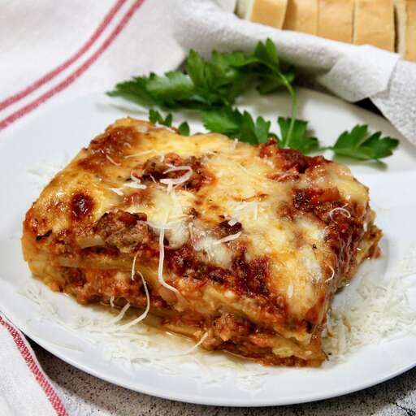

Lasagna

Description
This is a recipe for a delicious homemade lasagna. Please make sure to read the recipe completely
before starting it. Also make sure to have all the ingredients at hand.
Ingredients
- 1 lb ground meat (1/2 lb pork meat, 1/2 lb beef meat)
- 1 onion, onion
- 1 can of tomato sauce
- 1 can of crushed tomatos
Steps
- Cook the meat
- Cook the noodles
- Make the cheese layer
- Assemble the lasagna
- Bake the lasagna
Home